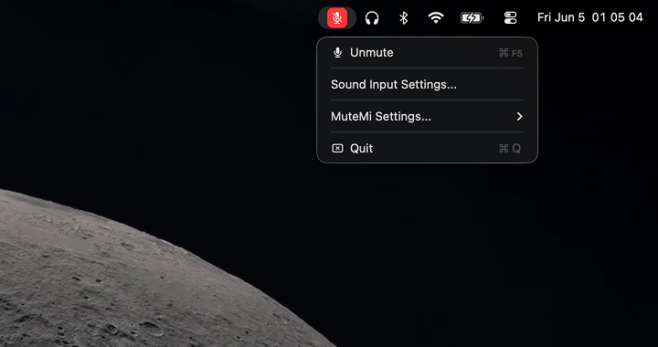
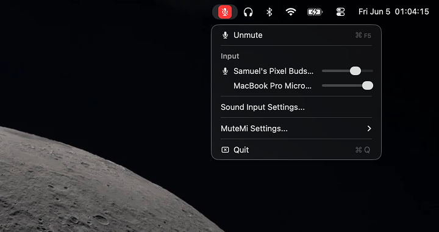
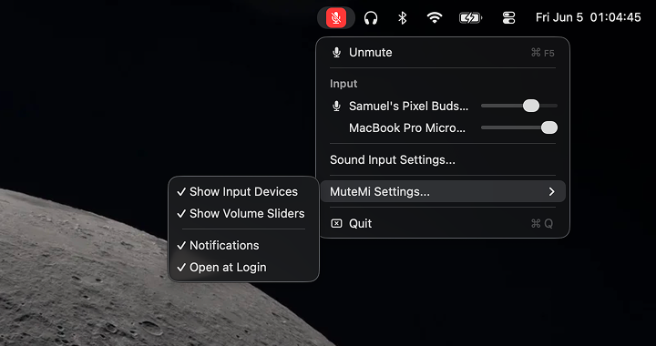
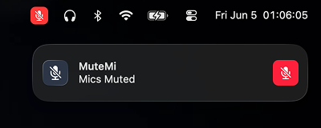
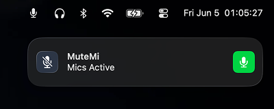
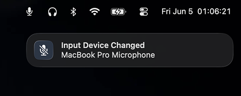

MuteMi
Mute every mic. One keystroke.
MuteMi sits quietly in your menu bar and gives you one keyboard shortcut
to instantly mute or unmute every microphone on your
Mac — not just the default one.
NO Accessibility permissions, NO Input
Monitoring, NO background daemons. The menu-bar icon turns red the moment
you're muted, so you always know your status at a glance.





